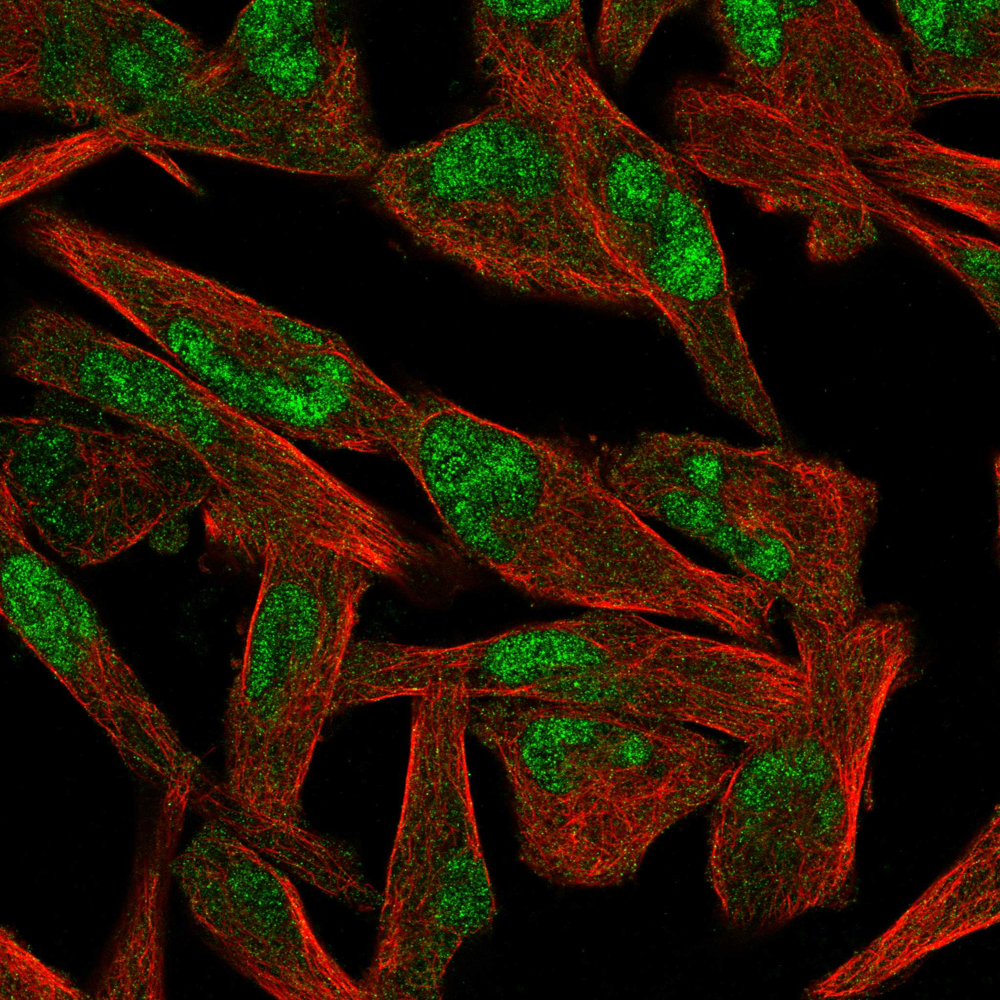
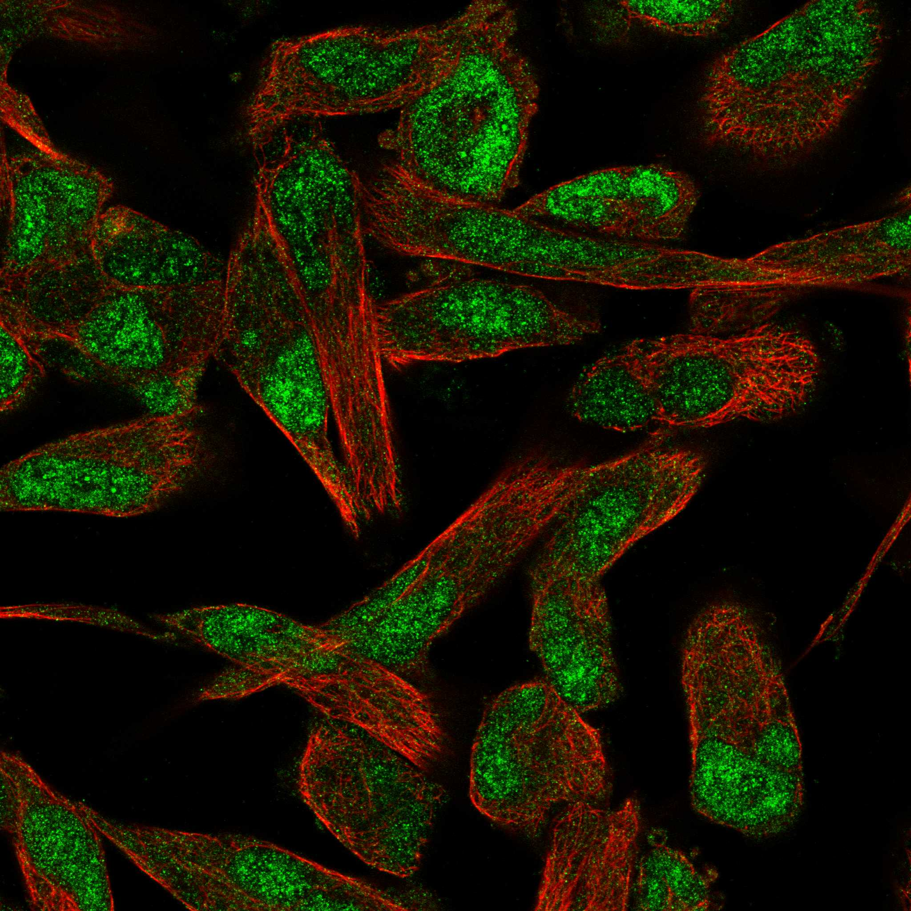

type: protein-evaluation gene: "DRGX" date: 2026-05-29 tags: [protein-scout, nuclear-protein, evaluation] status: scored ---
DRGX 核蛋白评估报告
1. 基本信息
| 项目 | 内容 |
|---|---|
| 基因名 / 别名 | DRGX / DRGX |
| 蛋白大小 | 263 aa |
| UniProt ID | A6NNA5 |
| 蛋白名称 | Dorsal root ganglia homeobox protein |
| 评估日期 | 2026-05-29 |
2. 评分总览
| 维度 | 得分 | 满分 | 加权后 | 关键证据摘要 |
|---|---|---|---|---|
| 🔴 核定位特异性 | 9/10 | ×4 | 36 | UniProt Nucleus (唯一注释) + 转录因子/同源盒/DNA结合蛋白 — 高可信度核定位 |
| 📏 蛋白大小 | 10/10 | ×1 | 10 | 263 aa (200–800 aa, 适宜生化实验) |
| 🆕 研究新颖性 | 8/10 | ×5 | 40 | PubMed=38篇 (非常新颖) |
| 🏗️ 三维结构 | 6/10 | ×3 | 18 | 新颖蛋白 (PubMed≤100) — 无结构基线, 不扣分 |
| 🧬 调控结构域 | 10/10 | ×2 | 20 | 同源盒结构域 (Homeobox) — 经典DNA结合/转录因子域 |
| 🔗 PPI 网络 | 4/10 | ×3 | 12 | 少量IntAct物理互作 (2条) |
| ➕ 互证加分 | — | max +3 | +1 | 核定位+转录因子功能一致 (+1.0) |
| 原始总分 | 137/183 | |||
| 归一化总分 | 74.9/100 |
3. 详细分析
3.1 核定位证据
| 来源 | 定位 | 可信度 |
|---|---|---|
| UniProt | Nucleus | TrEMBL/Swiss-Prot |
| Protein Atlas (IF) | Rh30, U-251MG | Supported (HPA)
IF 图像:  
结论: UniProt Nucleus (唯一注释) + 转录因子/同源盒/DNA结合蛋白 — 高可信度核定位
3.2 蛋白大小评估
263 aa 蛋白。评价: 263 aa (200–800 aa, 适宜生化实验)
3.3 研究现状
| 指标 | 数值 |
|---|---|
| PubMed 总数 | 38 |
| 新颖性分级 | 非常新颖 |
评价: PubMed 共 38 篇文献，属于非常新颖。研究空间充足，适合作为创新课题。
关键文献: 1. Ito T et al. (2020). "Dorsal Root Ganglia Homeobox downregulation in primary sensory neurons contributes to neuropathic pain in rats". *Mol Pain*. PMID: 32000573 2. Javeed N et al. (2015). "Controlled expression of Drosophila homeobox loci using the Hostile takeover system". *Dev Dyn*. PMID: 25820349 3. Nomaksteinsky M et al. (2013). "Ancient origin of somatic and visceral neurons". *BMC Biol*. PMID: 23631531 4. Cocci P et al. (2023). "Effect of polycyclic aromatic hydrocarbons on homeobox gene expression during embryonic development of cuttlefish, Sepia officinalis". *Chemosphere*. PMID: 36889469 5. Regadas I et al. (2013). "Several cis-regulatory elements control mRNA stability, translation efficiency, and expression pattern of Prrxl1 (paired related homeobox protein-like 1)". *J Biol Chem*. PMID: 24214975
3.4 三维结构分析
> AlphaFold PAE: 暂无数据或未提供可用 PAE 图；结构判断基于 AlphaFold/PDB 可用记录。
| 指标 | 数值 |
|---|---|
| AlphaFold 平均 pLDDT | None |
| 有序区域 (pLDDT>70) 占比 | None% |
| 高置信度 (pLDDT>90) 占比 | None% |
| 可用 PDB 条目 | 无 |
评价: 新颖蛋白 (PubMed≤100) — 无结构基线, 不扣分
3.5 结构域分析
| 来源 | 结构域 |
|---|---|
| UniProt | 无注释结构域 |
| GO Molecular Function | Transcription factor required for the formation of correct projections from nociceptive sensory neurons to the dorsal horn of the spinal cord and norm |
染色质调控潜力分析: 同源盒结构域 (Homeobox) — 经典DNA结合/转录因子域
3.6 PPI 网络
实验验证互作 (IntAct physical association):
| Partner | 方法 | PMID | 功能类别 | 调控相关？ |
|---|---|---|---|---|
| Q9VL14 | two hybrid array | 30995488 | - | - |
| P09774 | two hybrid array | 30995488 | - | - |
STRING 预测互作 (combined score >0.4):
| Partner | Score | 功能类别 | 调控相关？ |
|---|---|---|---|
| 无高置信度STRING互作 | - | - | - |
已知复合体成员 (GO Cellular Component):
- 无已知复合体注释
评价: 少量IntAct物理互作 (2条)
3.7 多库互证
| 维度 | 来源 | 结果 | 是否一致 |
|---|---|---|---|
| 三维结构 | AlphaFold + PDB | pLDDT=None, PDB:0条目 | 无实验结构 |
| 结构域 | UniProt | 0个注释域 | N/A |
| PPI | STRING + IntAct | IntAct:3, STRING:11 | 一致 |
| 定位 | UniProt | Nucleus | 是 |
互证加分明细:
- 核定位+转录因子功能一致 (+1.0)
总分: +1 / max +3
PAE 图: 暂无PAE数据
4. 总体评价
推荐等级: ★★★★ (74.9/100)
核心优势: 1. 非常新颖 (PubMed=38篇) 2. UniProt Nucleus (唯一注释) + 转录因子/同源盒/DNA结合蛋白 — 高可信度核定位 3. 同源盒结构域 (Homeobox) — 经典DNA结合/转录因子域
风险/不确定性: 1. 无 Protein Atlas IF 实验验证 2. 无 AlphaFold 高质量结构或结构待验证
下一步建议:
- [ ] Protein Atlas IF 实验验证核定位
- [ ] AlphaFold 结构预测分析
- [ ] Co-IP/MS 验证PPI网络
5. 数据来源
- UniProt: https://www.uniprot.org/uniprotkb/A6NNA5
- PubMed: https://pubmed.ncbi.nlm.nih.gov/?term=DRGX
- STRING: https://string-db.org/
- IntAct: https://www.ebi.ac.uk/intact/
PPI 网络（三源综合）
| Partner | Source | Score/Evidence |
|---|---|---|
| 无记录 | — | — |
IntAct 有限记录。无 BioGrid 补充数据。